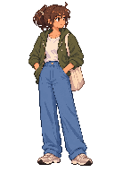

New to choosing pixel sizes? Read Pixel art before you draw first.
Lesson 01 / about 7 minutes
Fix a few pixels.
Keep the rest.
Your win: one tiny color patch on the tote, on its own layer, saved in your own file.
A layer is like a transparent sheet. Paint on the top sheet and you can change its color patch without repainting the character underneath. A cel is one layer’s picture in one animation frame. This practice file has just one frame. Layers ↗

Do this in Aseprite
- Open the practice copy, then give it your name.Use
File → Openand choose character-practice.aseprite in this course’spracticefolder. Immediately useFile → Save As…and savemy-first-correction.asepritethere. Keep the .aseprite extension. Save ↗ - Find the stack of layers.If the timeline/layer area is hidden, use
View → Timeline. Each row is a layer; each column is a frame. Find04-tote. The hiddenguide-source-seed (hidden)is an old guide; leave it hidden. Click the topmost layer before adding your new one. - Add a transparent sheet above the character.Use
Layer → New → New Layer, name itCorrections, and put it at the top of the stack by dragging its row if needed. Select its cell in the first frame. You should see the complete character beneath it. New layers ↗ - Choose one color and one tiny patch.Zoom until individual squares are comfortable to click, around 800%. Click the Eyedropper tool and sample an existing cream shade on the tote. Click Pencil; set its brush size to
1 pxand opacity to100%in the top tool options. OnCorrections, place 2–6 pixels just inside the bag. Try softening one dark interior mark. Leave the bag edge, strap, hand and face alone. This is practice; you are not required to improve the art on the first try. Drawing tools ↗ - Make the change disappear, then bring it back.Click the visibility eye for
Corrections. Only your little patch should disappear. If nothing changes, make sure the row is above the tote and you painted on its first-frame cell. If a large part disappears, you toggled a source layer instead. - Test undo and actual-size reading.Use
Edit → Undo, thenEdit → Redo. Return to 100% zoom. Does the tote still read as the same cream bag? Save. Close only your practice tab, reopenmy-first-correction.aseprite, and check thatCorrectionsis still a separate row.
The eraser only reaches the selected layer
Erasing on Corrections removes your patch and reveals the old pixel beneath it. It cannot make a pixel on the original tote disappear. For a real silhouette deletion, duplicate the tote’s own layer, hide its original, and edit the duplicate. That is a later exercise; today, keep the silhouette intact.
Your visible proof
Ask the agent: “I tried the tote patch. When I hide Corrections, ____. Why?” You can also ask for help finding any control. Your actual result determines the next lesson.
Primary reading: Aseprite’s Layers guide. Menu names are preferable to guessing Mac shortcuts; tooltips show your installed bindings.